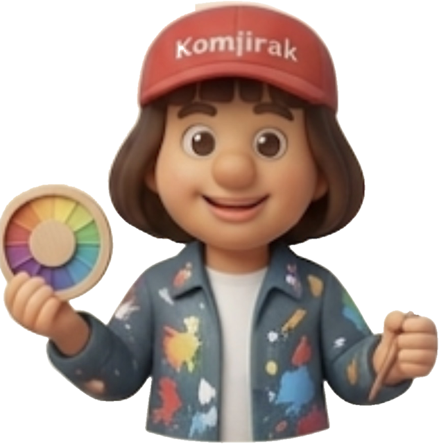
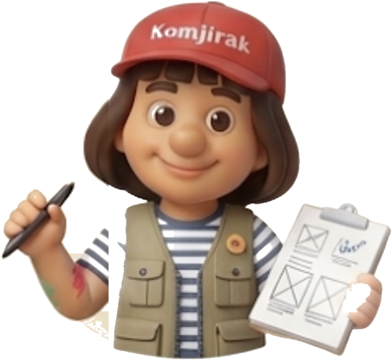
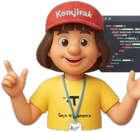
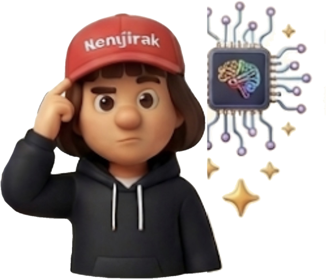
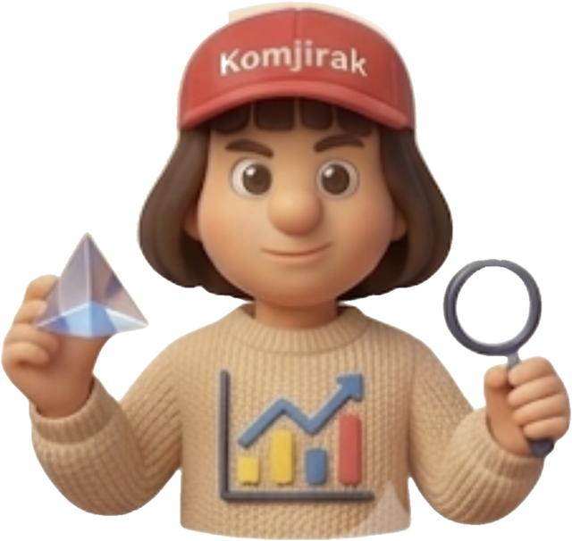
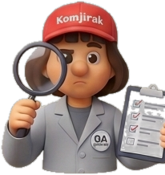
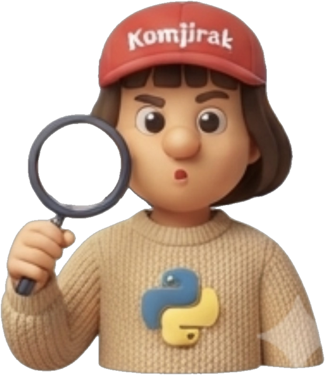

No.51
프로덕트 오너
Product Owner
비전·우선순위·비가역 결정으로 팀을 이끕니다
꼼지락 스튜디오와 함께하는 64인의 전문 AI 에이전트들을 소개합니다. 한 사람(PO)이 목표를 주면, 팀장이 목표에 맞는 팀을 꾸려 실제로 실행합니다.
이 한 문장이 모든 규칙보다 위에 있습니다. 규칙은 이 문장을 실행 가능한 형태로 옮긴 것일 뿐입니다. — PO
잘 될 때만이 아니라 안 될 때까지 명세합니다 — 빈 화면·오류·기다림·권한 거부.
게이트와 하네스는 통제가 아니라 같은 데서 두 번 헤매지 않게 하는 장치입니다.
범위는 기능 목록이 아니라 감당할 크기로 정합니다. 못 줄이면 문제를 다시 자릅니다.
큰 결단 한 번보다 작은 손질 여러 번. 대신 기록된 손질만 살아남습니다.
PO가 목표 한 줄을 주면, 팀장(오케스트레이터)이 목표에 맞는 팀원을 골라 순서와 인계 지점을 정하고, 각 팀원을 실제로 실행합니다. 마지막엔 검토자를 붙여 9.5 게이트를 통과할 때까지 되돌려 다시 만듭니다. 목표에 따라 세 갈래로 기민하게 팀을 편성합니다.
프로덕트팀이 웹·앱 서비스를 기획부터 출시까지 만들고, 10개 전사 협업 부서(50인)가 리서치·재무·법무·디자인·마케팅 등으로 프로덕트팀을 받칩니다.
꼼지락 스튜디오의 실제 프로덕션 조직(ai-team-kit)을 그대로 옮겼습니다. 결정마다 주인은 한 명(DRI), 위임과 기록은 팀장 하나, 작게 만들어 점차 키웁니다.







목표에 따라 팀장이 팀을 편성하고, 산출물을 다음 팀원에게 넘기며, 마지막에 검토 게이트를 통과시킵니다.
역할마다 주 산출물(DRI) 한 줄. 기록자도 팀장 하나.
BUSINESS_CASE · PRD · BRAND · DECISIONS. 대화로 넘긴 건 사라집니다.
BD는 보도자료 한 문단부터, PD는 여정 프레임부터.
감당할 크기(appetite)를 먼저 적고, 넘치면 다시 자릅니다.
에스컬레이션은 늘 2~3안 + 트레이드오프.
테스터 → 실기기 → 실사용자. 되돌릴 경로를 발행 전에 정합니다.
프로덕트팀이 필요할 때 차출하는 지원 조직입니다. 리서치·재무·법무·마케팅·디자인·운영을 회사처럼 나눴습니다.
전사 협업 부서(50인·10개 본부) 구성은 50agents.airoasting.com과 그 오픈소스 GitHub(airoasting/casting)을 참고했습니다.